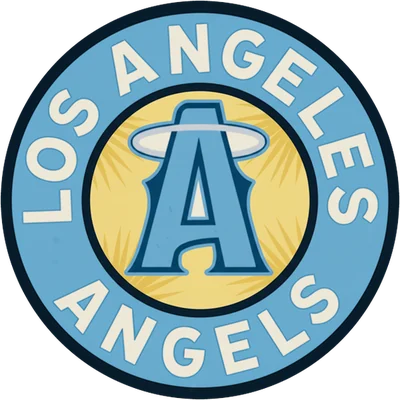

The Season So Far · ABL · May 13, 2002 · By Site Staff
Austin Kearns Hit for the Cycle, and Anaheim Is Still Waiting for Its Record to Catch Up
The Angels came in with a B- lineup and a pitching staff expected to struggle. The offense ranks third in the ABL in OPS, the run prevention has been fine, and Anaheim has outscored opponents by 38 runs. It's 21-19.
Anaheim Angels · 21-19 · 232 runs scored, 194 allowed
Anaheim came into the season with an average offense, solid upside in Austin Kearns and a middling pitching staff that figured to make run prevention a struggle. The preseason consensus ranked the Angels 12th, the projections had them at 78-73, and the one thing everyone agreed on was the clubhouse, one of the three healthiest in baseball.
The upside arrived on Sunday. Kearns, 21, singled, doubled, tripled and homered against Austin, drove in four and finished the 9-0 win with the cycle. The next day he had four more hits. He's hitting .327 with seven home runs, 33 RBI and a 133 OPS+.
Not an average offense
He has company. As a team the Angels are hitting .310 with a .370 on-base percentage, third in the ABL in OPS. Marquis Grissom, 35, was a .654 OPS hitter in 2001 and is hitting .386 now; on April 3 in Las Vegas he doubled and hit a grand slam. Jose Valentin has nine homers, 39 RBI and a 141 OPS+, though he's been thrown out six times in seven steal attempts. Scott Podsednik, another of the young talents, has a .409 on-base percentage, 14 steals in 15 tries and a team-leading 38 runs. On April 13 the Angels beat Pittsburgh 22-4.
J.J. Hardy, 19, started about as well as a teenager can. On Opening Day he homered twice, including the tying shot in the ninth, and Anaheim beat San Juan on a walk-off. He homered again by April 5 before cooling to a 93 OPS+. Mike Sweeney, the team's best player coming in, is hitting .328 but has only two homers and a 101 OPS+ after a .916 OPS last year.
Run prevention
The struggle on the mound hasn't come. Anaheim has allowed 194 runs, and only four ABL teams allow fewer per game. Its 4.67 ERA ranks sixth. The rotation is still unspectacular. Sterling Hitchcock is 5-2 with a 4.13 ERA and was dominant on April 7, with six strikeouts and no walks in 6.2 innings. Ryan Dempster is 0-2 with a 5.12 ERA in eight starts. Seth Greisinger threw eight shutout innings in Sunday's cycle game. At the back, LaTroy Hawkins is 9-for-9 in save chances with a 2.25 ERA. Luis Ayala has a 2.92 ERA and an 0-4 record, including a 10th-inning loss to New York on April 6 that New York won with clutch extra-inning hitting.
The gap
A +38 run differential usually belongs to a team about two games better than 21-19, and Anaheim's missing wins have mostly come in extra innings, where it's 1-3. On April 2 the Angels lost an all-time slugfest to San Juan, 15-12 in 13 innings, after a four-run ninth had tied it. On April 10 they lost 11-10 in 14 in Minnesota. They're 14-5 at home and 7-14 on the road, and 0-6 against Minnesota and San Diego.
The Angels are fifth in the Western Conference, five games behind Southside. The site gives them a 29.2% chance at the playoffs and an 8.4% chance of relegation. Next come three in Montreal, then Tampa Bay and Kansas City at home.
Season to date through the May 13, 2002 export. Records, standings, game results and player lines come from the OOTP export (WAR and OPS+ as the site computes them); game references link to the box scores.